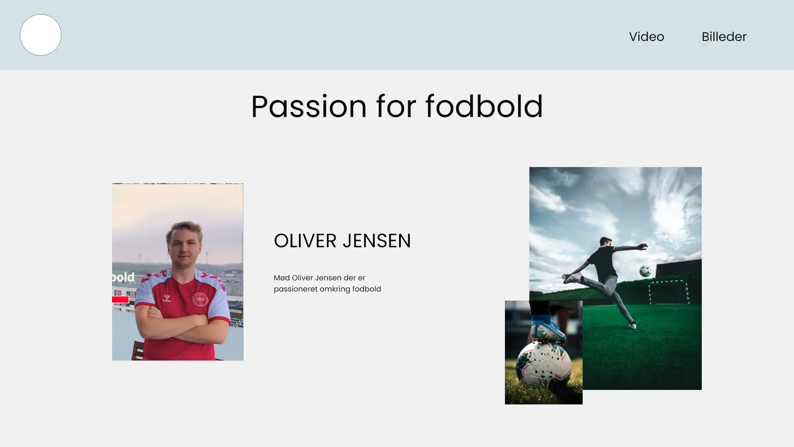

GRUNDLÆGGENDE INDHOLD - PILOTSITE
Jeg har valgt at dele temaet op i henholdsvis pilotsite og redesign delen, så jeg først gennemgår pilotsite og efterfølgende redesign delen.
På dette tema arbejdede vi med forståelse for videoproduktion, der både indeholder processen inden videooptagelse, selve optagelsen og postproduktion - herunder videoredigering.
Til temaet er vi blevet introduceret for Adobe Premiere Pro, som redigerings program.
Vi har arbejdet med forskellige filformater som eks. .mp4, .mp3 og wav.
Videooptagelse
Videoproduktionen er lavet som gruppearbejde. Hvor vi en 3-mandsgruppe skulle finde en person med en passion, som vi kunne interviewe og optage en video af.
I videooptagelsen har vi arbejdet med billedkompositionen, så interviewpersonen har luft i taleretningen. Han ser ikke direkte ind i kameraet, men er sat i en vinkel i højre side af billedet. På den måde skabes der en balance i billedet. Og der tales til seeren men fra en afstand som er behagelig.
Vi har arbejdet med at der er luft rundt om interview personen, så det af seeren opfattes roligt og behageligt og er en gengivelse af naturlige regler for hvordan vi ser hinanden.
Interview personen sidder i en vinkel og kigger derfor ikke ind i kameraet, dette for at give seeren en oplevelse af at personen taler til intervieweren.
Vi har arbejdet med B-rolls, hvor interview personen taler om sin passion hjemme hos ham selv, i sekvenser kan man se ham derhjemme mens han ser fodboldkampen, sammen med venner.
Vi arbejdet ud fra et storyboard med de scener vi gerne ville have med i videoen. Her har vi taget udgangspunkt i 5-skuds reglen og anvendt video sekvenser der viser close-up, wide-shot og over the shoulder.
Pilotsite refleksioner
Vi har udover videoproduktion skulle udarbejde et pilotsite omkring videoen. Mit pilotsite er bygget op omkring passionen for fodbold, med græs struktur i baggrunden.
Jeg har ikke meget godt at sige om mit site, som jeg virkelig kæmpede med. Og burde både have arbejdet med billeder, layout og design. Selve kompositionen på sitet harmonerer ikke, da både farver, tekst og billeder er ude af proportioner. Jeg ville i dag have lavet sitet anderledes. Og viser et mock-up af nyt designforslag.
Originale site
Mock-up af ny design ide
Her har jeg valgt at tone sitet ned og fokuserer på fodbold i få billeder.
Jeg har valgt neutrale og nedskaleret farver og en simpel font.
Jeg har valgt at dele sitet op i undersider.
Editing
Til redigering af videoen har jeg brugt Premiere Pro, her har jeg klippet
videoen sammen til 1 minut, sat sammen af interview og 5-skudsreglen.
Der er sat musik på i baggrunden og en overskrift.
GRUNDLÆGGENDE INDHOLD - REDESIGN
På denne del af temaet skulle vi som gruppe redesigne et website. Vi skulle selv finde et firma vi måtte redesigne for.
Krop & Medicin
Vi valgte et firma, som en af gruppemedlemmerne kendte ejerne af. De havde ikke et færdigt website i forvejen. Vores opgave bestod derfor i at designe et helt ny website til dem.
Firmaet hedder Krop & Medicin og har en fysisk butik på Nørrebro. Her sælger de alt som et normalt apotek gør, bortset fra receptpligtig medicin. De tilbyder også forskellige services såsom: medicingennemgang, alternative behandlinger og kurser.
Som en del af opgaven skulle vi analysere på virksomhedens nuværende site. Vi havde få billeder af et site der ikke var færdigt.
På baggrund af kendskab og den tekst der var, kom vi frem til at virksomheden gik meget op i professionalisme, faglighed og rummelighed. Virksomhedens koncept er at tilbyde dialog og hjælp til en multietnisk gruppe og slår sig samtidig på at have multisproget personale. Udover det, er de ansatte uddannet eller i gang med at uddanne sig til farmaceuter.
Design
Vi valgte at lave et moodboard på baggrund af det vores analyse havde fortalt os om virksomheden. Og har derfor holdt farverne kølige og professionelle, men med billeder der har varme. Vi har valgt en font som er letlæselig og valgt kanpper i ascentfarve til den kølige blå der skal være ascent farven på siden. Vi har valgt mange billeder med overskrifter, der skal gøre det nemt og overskueligt for brugeren at finde frem til indholdet.
Vi har valgt at designe et nyt logo til virksomheden, da vi synes det oprindelige logo stod i
kontrast til det de gerne
ville visualisere.
Vores redesignede logo skal give indtryk af mangfoldighed og rummelighed og lægge knap så meget
fokus på medicin.
Vi lagde os fast på en stil efter at have undersøgt lignende virksomheders layout, farver og fonte. Dette blev udgangspunktet i vores stiletyle.
Kodning & Github
Da vi arbejdede som en gruppe på dette site, brugte vi Github til at dele koden med hinanden. Det fungerer på den måde at en opretter et repository og deler med resten af gruppen. Hvert gruppemedlem, står for 1 HTML side og tilhørende CSS fil.
Jeg har i redesignet stået for shoppen og CSS filen med gruppens mutual style – dvs. det der går igen på alle sider.
Trello Board & Scrummaster
Som en del af opgaven, havde vi daglige scrum møder, hvor vi tjekkede ind på de opgaver vi hver især havde. Jeg blev valgt til gruppens scrummaster og havde overblikket over opgaverne. Vi brugte et Trello board til at liste opgaverne op.
Refleksioner
Vi blev hurtigt klar over i gruppen af den opgave vi havde påtaget os med at redesigne et website der ikke eksistrede, var en meget stor opgave. Og jeg oplever ikke at vi er i mål. Vi talte til vores fremlæggelse om, hvordan man udfra det vi har nu, kunne være sjovt at redesigne det. Jeg tror resultatet ville blive meget anderledes.
En anden del vi måtte spare på, grundet tid var test. Men det kunne have været sjovt at se hvad en survey i lokalområdet kunne have givet af tanker og websites layout, design og features.
Jeg havde generelt en oplevelse af at virksomhedens ejere også var lidt usikre på deres koncept og gerne ville gribe over en stor mundfuld af opgaver. Det bærer vores side også præg af og vi skulle nok have stolet lidt mere på vores egen fornemmelse.
Moodboard
Moodboard der illustrere den følelse der skal være gennemgående på sitet. Med de blå kølige farver til at udtrykke professionalisme og de varme billeder for at udtrykke rummelighed .
Styletile
Styletil med valgte farver, fonte og knapper. .
Originale "site"
Billeder af det originale ikke færdige site.
Shop
Billede af den originale shop.
Trello
Vores trello board, vi brugte til vores scrum møder. På boardet er der faner med To do, Doing og Done for at holde styr på gruppens opgaver og fremgang. .
Lighthouse test
Lighthouse test af site efter redesignet. Lighthouse test kan vise noget omkring sidens performnce, accesbility og quality på sitet som der kan justeres ud fra. .
Github
Vores Github repository hvor al vores kode er gemt og delt med hinanden. Man comitter i sin kode, når noget fungerer, så det er en måde at backe sin kode op og dele med andre. .
Redesign forside
Forsiden efter redesign.
Redesign af shop
Shop efter redesign
Redesignet logo
Logo efter redesign.